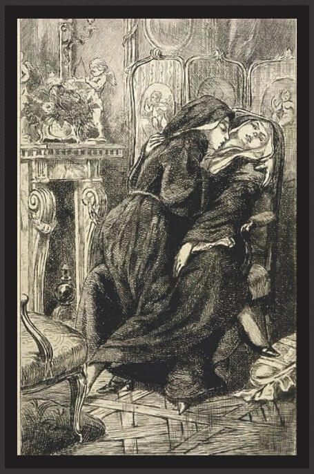

Occultism is about the hidden and the forbidden – a collection of esoteric teachings and rituals spanning millennia. From the secrets of alchemy to the whispers of tarot cards, from ancient mystery cults to modern spiritual movements – the occult has always fascinated and frightened people.
The teachings of the Church for centuries were clear: a woman's sexuality should only exist within marriage and for the purpose of bearing children. Any form of pleasure outside of this, especially masturbation, was seen as rebellion against God's order. There were also beliefs that masturbation "opened the gates" to demonic influence, since the woman gave in to the desires of the flesh without male control.
During the Middle Ages and onwards, female sexuality was associated with sin and dark forces. Women who showed pleasure or masturbated could be suspected of having contact with the devil. In witch trials, sexual activity with evil spirits was often cited as "proof" of the woman's guilt. Masturbation was not only seen as sinful – it could be interpreted as a sign that the woman had connections with the occult.
hysteria During the 19th century, female masturbation was thought to cause "hysteria," a condition linked to the woman's uterus. Doctors believed that women who masturbated could become mentally unstable, depressed or even crazy. This led to treatments such as vibrator therapy, cold baths, or in the worst case, removal of the clitoris all to stop "morbid" masturbation. It was therefore not only taboo, but was considered a medical and moral danger.
what is occultism?
Occultism encompasses the study of secret and spiritual knowledge, often outside traditional religious and scientific frameworks. It may include:
Magical rituals – The use of symbols, spells and ceremonies.
Astrology & numerology – Seeking answers through the positions of the stars and the meanings of numbers.
Hermeticism & alchemy – Philosophical and mystical traditions of transformation and enlightenment.
Spiritism & spiritualism – Communication with other dimensions through mediums and séances.

Dark and Bright Sides
Some see occultism as a path to insight and self-development, while others warn of its dangers. Historically, many occult traditions have been persecuted, while secretly continuing to influence philosophy, art, and religion.
One aspect of occultism intersects with the perception of female sexuality, particularly in the context of historical views on women's bodies. In ancient times, female sexuality was seen as both a source of life and spiritual energy but also something dangerous, needing to be controlled. Women's bodies, and by extension their pleasure, were often demonized and labeled as "witchcraft" during periods like the witch trials of the Middle Ages. The Catholic Church and patriarchal systems feared women who embraced their own pleasure, as it symbolized independence and autonomy.
Yet, in secret mystical traditions—among mystics, pagans, and tantrics—the female orgasm was understood as a spiritual tool, a source of energy and creative force leading to enlightenment. This ancient wisdom, hidden over time in suppressed writings and symbols, has recently resurfaced.
Today, women are reclaiming their sexuality, just as the witches once did. By exploring their bodies and embracing pleasure, they break free from ancient chains and reconnect with their innate power. What was once called "witchcraft" is, in truth, an ancient wisdom: female pleasure is magic.
Today, women are reclaiming their sexuality, just as the witches once did. By exploring their bodies and embracing pleasure, they break free from ancient chains and reconnect with their innate power. What was once called "witchcraft" is, in truth, an ancient wisdom: female pleasure is magic.
This magic is not loud or theatrical—it’s quiet, cyclical, and deeply personal. It pulses in moonlit rituals, in breathwork and movement, in honest conversations between women who refuse to be silenced. It lives in books once hidden, in herbs once outlawed, and in stories passed from grandmother to granddaughter, whispered like spells.
Derived from curriculum and teaching materials used in:
The Lyceum of the Veiled Path
The Rosewood
Marwick Institute for Philosophical Studies
Ashwick School of Hermetic Arts
The Lysmere School of Hidden Histories
svearike